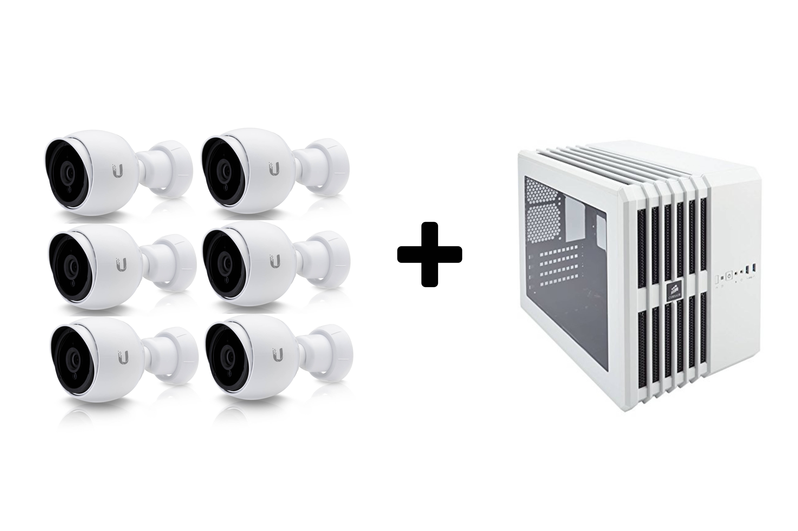

A nice thing about using Ubiquiti products is that the Surveilance System will be unified and work seamlessly with Ubiquiti gear. You only need one account to control everything.
We provide 2 NVR Surveilance System!
| NVR 10 | NVR 20 |
|---|---|
| The NVR 10 is our entry level NVR system. It features an Intel Core i3 CPU, 8GB of RAM, a fast 60GB SSD boot drive, and a 4TB Western Digital Purple surveillance hard drive. Even though this system comes in a small form factor case it packs a serious punch – and is capable of running 10-25 total security cameras. This bundle comes with 5 Ubiquiti G3 outdoor-rated cameras to start you off right. | The NVR 20 is builds on the NVR 10 with RAID1 data drives, and more powerful components. It features an Intel Core i5 CPU, 16GB of RAM, a super fast 120GB M.2 boot drive, and a pair of 8TB Western Digital Purple surveillance hard drive in a redundant RAID1 configuration. All of this power still comes in a nice small form factor case – and is capable of running 10-40 total security cameras. This bundle comes with 10 Ubiquiti G3 outdoor-rated cameras. |